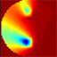

|  | TOAST Demo 1: Forward solver |
This demo shows how the TOAST forward solver calculates the complex photon density field and amplitude/phase boundary data arising from modulated light propagating a circular medium from a surface source location.
You can modify the absorption and scattering inclusions, and the source location, to see the effects on the fields in real time.